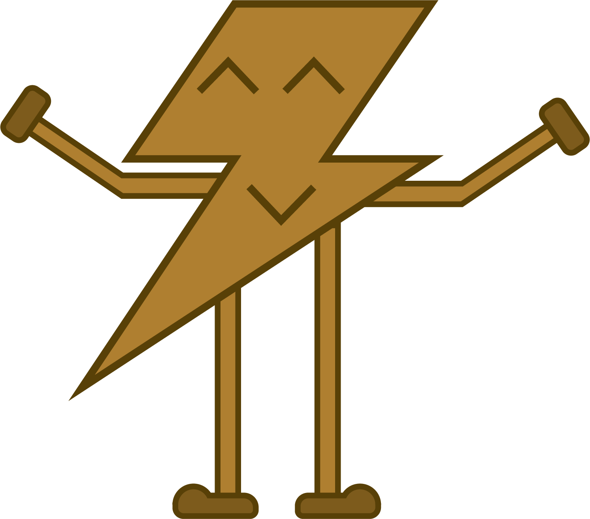
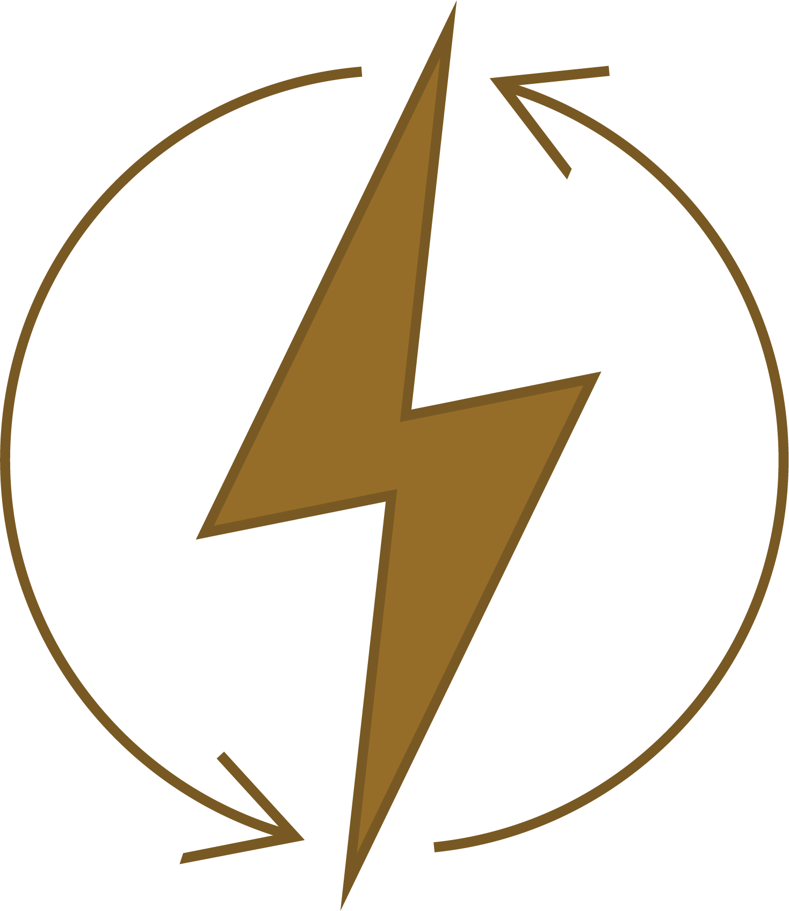
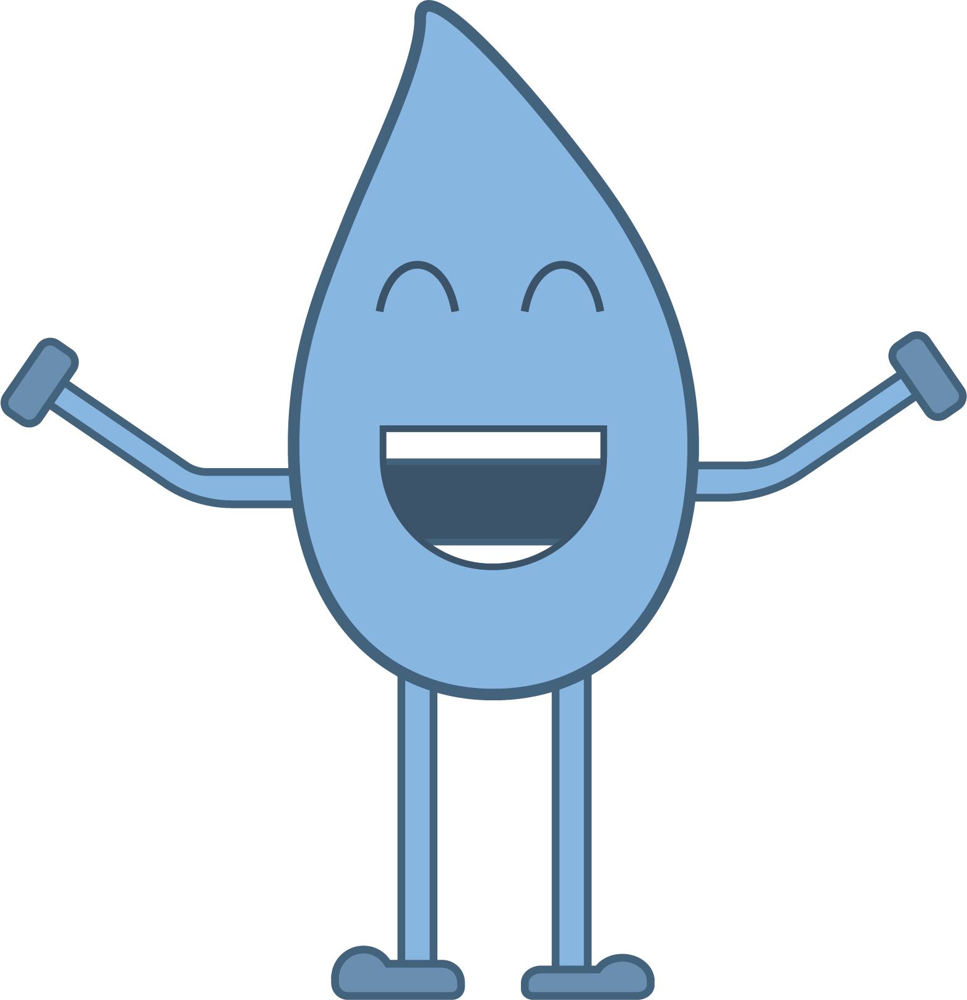
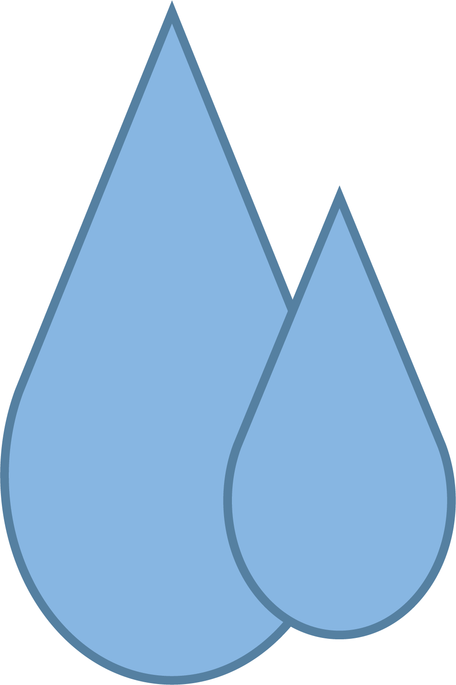
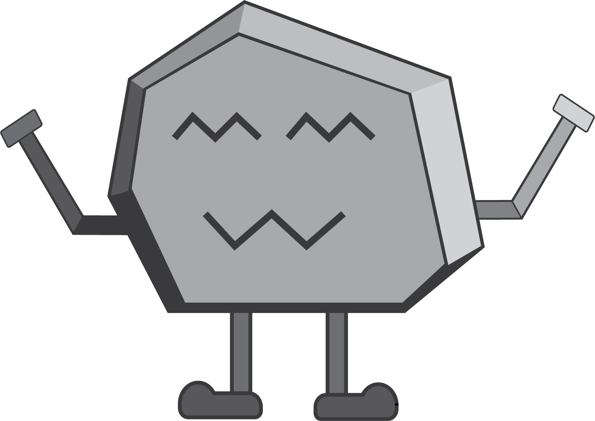
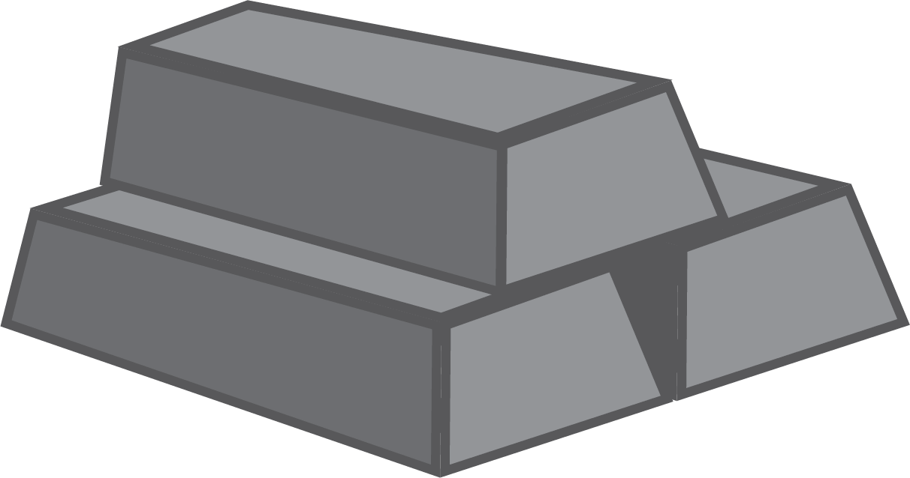

Besparing
Ontdek hoe refurbished producten onze planeet en je portemonnee sparen.
Energiebesparing
Wist je dat...


De productie van een nieuwe smartphone kost gemiddeld 80% van de totale energie die het apparaat tijdens zijn levensduur zal verbruiken.
Waterbesparing

Wist je dat...
Het maken van een nieuwe laptop kost ongeveer 240 liter water, terwijl de reparatie van een bestaande laptop slechts een fractie van dat waterverbruik vereist.
Grondstoffen- besparing
Wist je dat...


Voor elke ton gerecycled elektronisch afval kunnen tot 15 ton grondstoffen worden bespaard.